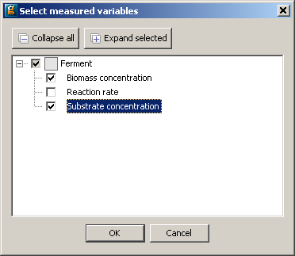

During an experiment, measurements of key variables are taken using sensors. The purpose of the Measurement and Sensors tab is to define the variables that will be measured and to specify how often or when the measurements can be taken.
Each measured variable must be associated with a sensor. In Experiment Design a sensor has a Variance model and a set of measurement times: the measurement times are either fixed or determined optimally.
To introduce a Variable that can be measured:
Use the Select... button to populate the table using a dialog-based choice which will only display variables that the model developer has chosen to be suitable as constraints. See the section on dialog-based variable choice in Model Validation.

Alternatively, click the <new> cell in the Measured Variable part of the table at the top of the window and type the full pathname of the gPROMS variable. If you do not wish to type the pathname you can select the appropriate variable from a drop down list by holding the CTRL key down and hitting the SPACE button on your keyboard. The first time you do this, gPROMS will give you a list of relevant Units and Variables. Select the desired one and then repeat as necessary to drill down to the desired Variable.
The full pathname may be converted to a descriptive name in case the model interface has been configured accordingly. Depending on the chosen application preferences, it may not be possible to edit the table directly.
You should provide a name for the sensor in the next column or if appropriate associate this Variable with an existing sensor.
For each sensor, you should provide the Variance model and information on when or how the measurement times are to determined.
Click on the Variance model cell next to the sensor. When you do so a dialog box will open.
Select the desired variance model from a drop down list and
enter the appropriate values for the variance model you have selected, click OK to close the dialog box. Note that as gPROMS is not estimating parameters (as in Parameter Estimation) you must provide a fixed value for the uncertainty of the sensor's measurements.
You must specify how frequently the sensor takes a measurement by selecting from the drop down menu in the adjacent cell.
for a fixed number of measurements, select equidistant - in the bottom half of the window; enter the number of measurements to be taken and the earliest possible measurement time.
to take measurements at fixed times, select fixed - in the bottom half of the window; enter the measurement times.
to let the optimiser choose the measurement times - in the bottom half of the window; enter initial guesses for the measurement times along with the minimum allowable time between measurements and the earliest possible measurement time .
for a steady state experiment you should choose unspecified.
Should you wish to delete a measurement you can do so using the button at the bottom of the window.